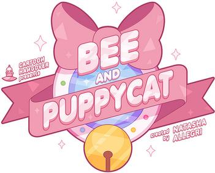
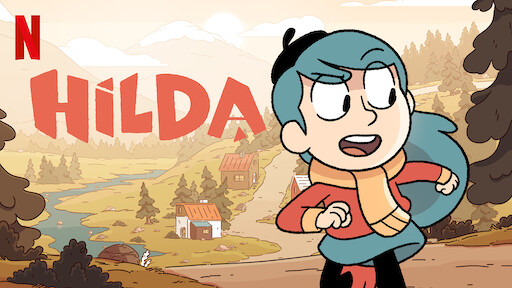
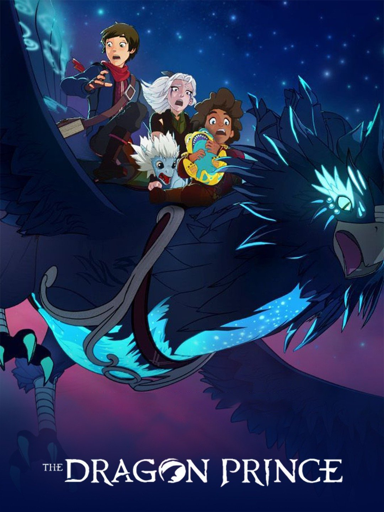

My Top 5 Favorite Shows
1. Bee and PuppyCat

The series revolves around Bee, an unemployed woman in her early twenties, who encounters a mysterious creature who she names PuppyCat.
2. Hilda

Hilda is a little girl who lives in Trollberg after her cabin was destroyed by Trolls. She explores the world around her and gets into a lot of trouble.
3. Raising Dion

A widowed single mom discovers that her son has super powers and tries to figure out how to raise him safely and responsibly.
4. The Dragon Prince

The series follows the story of the prince half-brothers Callum and Ezran and the elf Rayla, who, as they take care of the infant dragon prince Azymondias, must end the thousand-year-old conflict between the human kingdoms and the magical creatures of the land of Xadia.
5. Avatar the Last Airbender

The series is centered around the journey of twelve-year-old Aang, the current Avatar and last survivor of his nation.